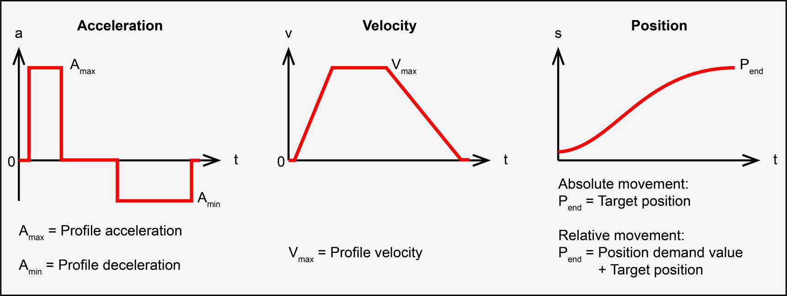
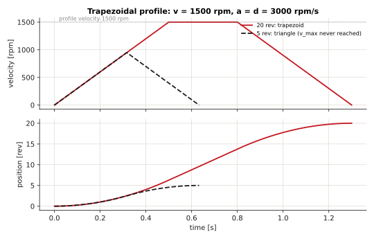
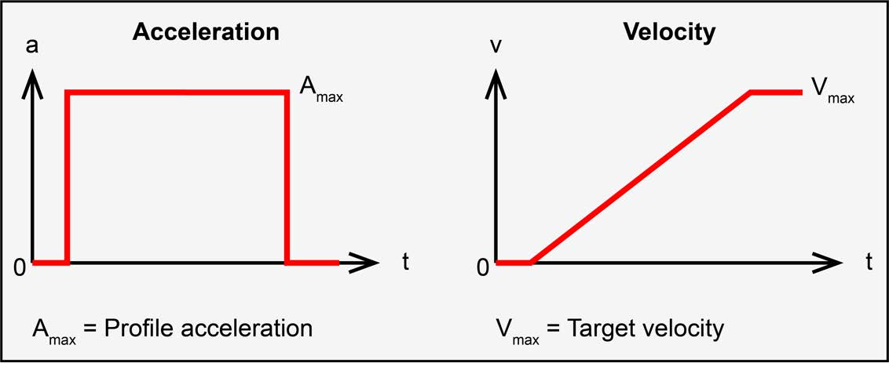
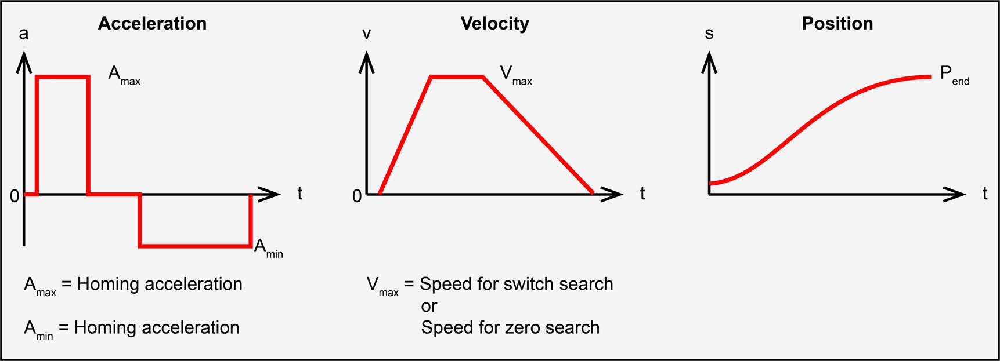

Motion profiles#
In the profile modes (PPM, PVM, HMM) the drive's trajectory generator plans the motion
from three numbers: a velocity, an acceleration and a deceleration. The EPOS4 implements one
profile type, the linear ramp (0x6086 = 0) - a trapezoid in velocity.

The trapezoid#
Call the profile velocity \(v\), the acceleration \(a\), the deceleration \(d\), and the distance to travel \(\Delta x\). The move has three phases:
If the distance is long enough to reach \(v\) - that is, \(\Delta x \ge x_a + x_d\) - the axis cruises at \(v\) for
The triangular case#
If \(\Delta x < x_a + x_d\), the axis never reaches \(v\): it accelerates, then decelerates straight away. The peak velocity and the time are
and with \(a = d\): \(v_{peak} = \sqrt{a\,\Delta x}\), \(T = 2\sqrt{\Delta x / a}\).

Units on the EPOS4#
The drive works in its own units, so convert before using the formulas:
| Drive unit | To SI | |
|---|---|---|
| position | quadcounts (qc) | \(\theta = 2\pi \cdot \text{qc} / N_{qc}\) rad, with \(N_{qc}\) quadcounts per motor turn |
| velocity | rpm (of the motor) | \(\omega = \text{rpm} \cdot 2\pi / 60\) rad/s |
| acceleration | rpm/s | \(\alpha = (\text{rpm/s}) \cdot 2\pi/60\) rad/s² |
In revolutions it is simpler: distance in turns \(= \text{qc}/N_{qc}\), velocity in turns/s \(= \text{rpm}/60\), acceleration in turns/s² \(= (\text{rpm/s})/60\).
Worked example#
A move of 20 000 qc on a 2000-qc encoder, at 1500 rpm, accelerating and decelerating at 3000 rpm/s:
\(x_a + x_d = 12.5 > 10\): a triangle. So
The axis never reaches the 1500 rpm requested. If a move takes longer than you expected, check which case it is.
At the output of a gearbox#
With SetMechanism(qc, gearRatio) a request in degrees is converted to motor quadcounts; the
velocity and acceleration stay at the motor (rpm and rpm/s are always the motor's on the
EPOS4). For a gear ratio \(g\) (output turns per motor turn - 0.01 for 1:100):
MechanismScale::ToRpmPerSecondAtOutput() and FromRpmPerSecondAtOutput() convert
accelerations.
Choosing the acceleration#
The acceleration costs current. With the total inertia at the motor shaft \(J\) (motor rotor plus the load reflected through the gearbox, \(J_{load}\, g^2\)):
so 3000 rpm/s (314 rad/s²) with \(J = 10^{-5}\) kg·m² and \(K_t = 0.105\) N·m/A needs
\(10^{-5} \cdot 314 / 0.105 \approx 0.03\) A on top of what the load and friction take - small
for a bare motor, large for a heavy arm. More acceleration than the current limit allows
shows up as a growing following error and, eventually, fault 0x8611.
Profile parameters#
| Parameter | Object | Unit | EposLib |
|---|---|---|---|
| Profile velocity | 0x6081 |
rpm | MotionProfileConfigs::profileVelocity, ProfilePosition::WithVelocity() |
| Profile acceleration | 0x6083 |
rpm/s | profileAcceleration, WithAcceleration() |
| Profile deceleration | 0x6084 |
rpm/s | profileDeceleration, WithDeceleration() |
| Quick stop deceleration | 0x6085 |
rpm/s | quickStopDeceleration - for QuickStop() and fault reactions |
| Motion profile type | 0x6086 |
- | motionProfileType, only kLinearRamp |
| Max profile velocity | 0x607F |
rpm | maxProfileVelocity - caps every requested velocity |
| Max acceleration | 0x60C5 |
rpm/s | maxAcceleration - caps every requested acceleration |
| Max motor speed | 0x6080 |
rpm | LimitConfigs::maxMotorSpeed - protects the motor |
| Max gear input speed | 0x3003:03 |
rpm | GearConfigs::maxGearInputSpeed - protects the gearbox |
A requested velocity above a maximum is limited to it; in PVM the Statusword reports it in bit 11.
Profile velocity#

Only the ramp: reaching a velocity change \(\Delta v\) takes \(\Delta v / a\) when accelerating and \(\Delta v / d\) when decelerating. 1000 rpm at 2000 rpm/s takes 0.5 s.
Homing trajectory#

The homing speeds (0x6099:01 switch search, 0x6099:02 zero search) and acceleration
(0x609A) shape every phase of a homing run; the end positions are computed internally.
Profiles generated by the master#
In the cyclic modes the drive generates nothing: your program sends one point per SYNC. A trapezoid in your code follows the same equations, sampled every period \(T_s\):
// v(t) of a trapezoid with acceleration a (rpm/s) up to v_max (rpm), held, then down.
double VelocityAt(double t, double vMax, double a, double tHoldEnd)
{
const double tUp = vMax / a;
if (t < tUp) return a * t;
if (t < tHoldEnd) return vMax;
return std::max(0.0, vMax - a * (t - tHoldEnd));
}
// every 10 ms:
motor.StageTargetVelocity(static_cast<std::int32_t>(VelocityAt(t, 1000, 2000, 2.5)));
In CSP, stage positions that are the integral of such a velocity profile - a step in the target position is an infinite velocity, which the position loop answers with a current spike and, often, a following error. The drive's interpolation smooths between points; it does not smooth a step.